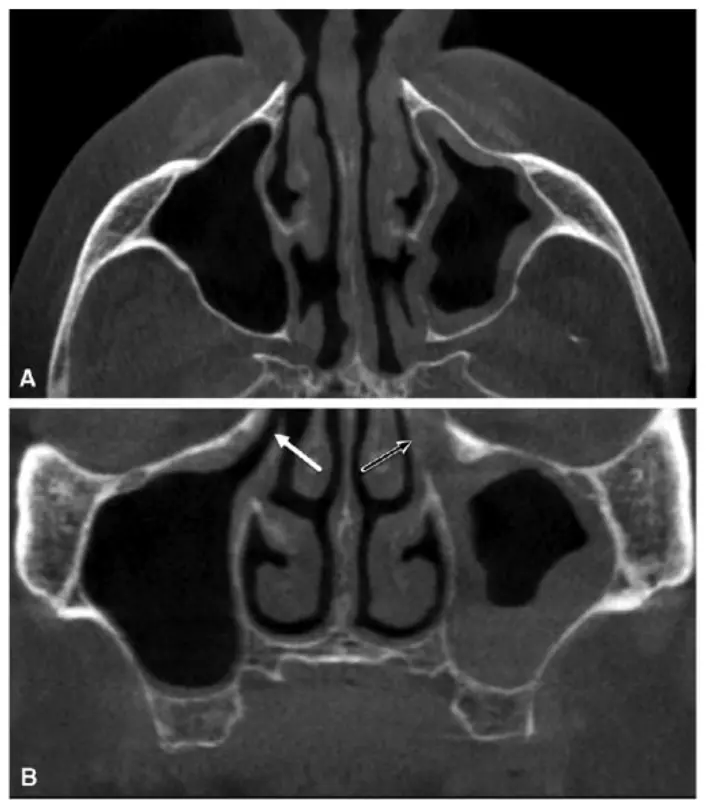
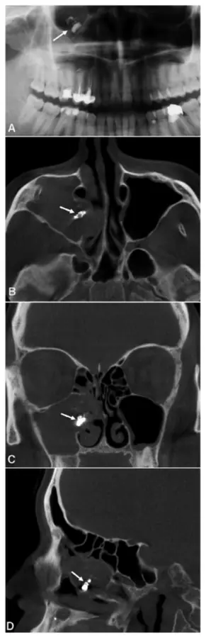

نسخه استخراجشده؛ ترجمه یا تأیید علمی انجام نشده است. وضعیت: captured
یک عدد، کل این درس را باز میکند: «پوشش مخاطی سینوسهای پارانازال بهطور طبیعی کمتر از ۱ میلیمتر ضخامت دارد و روی تصویر دیده نمیشود. ولی وقتی مخاط بر اثر التهاب ضخیم میشود، ضخامتش میتواند ۱۰ تا ۱۵ برابر شود، و آنگاه با تصویربرداری دیده میشود.»

پس هر مخاط سینوسی که میبینی، تعریفاً غیرطبیعی است. تغییر التهابی موضعی را موکوزیت مینامند.
و ظاهر تصویریاش: «مخاط ضخیمشده بهآسانی روی تصویر قابل کشف است، به شکل یک نوار رادیواوپک با دانسیتهی بافت نرم، خوشمرز و بدون کورتیکاسیون که کانتور دیوارهی استخوانی سینوس را دنبال میکند.»
و یک هشدار بالینی که بیش از هر چیز از درمان بیمورد جلوگیری میکند: «بسیاری از بیماران از تغییر مخاط سینوسشان بیخبرند، و این تغییرات اغلب بهعنوان یافتهی اتفاقی روی تصاویری کشف میشوند که برای مقاصد دیگری گرفته شدهاند. در نتیجه، کشف مخاط ضخیمشده در فردی که در غیر این صورت بیعلامت است، به معنای لزوم بررسی بیشتر یا نیاز به درمان نیست.»
و حالا رینوسینوزیت — یک گام فراتر: یک وضعیت التهابی منتشر مخاط سینوسها و حفرهی بینی، ناشی از یک آلرژن، باکتری یا ویروس. تغییرات التهابی میتوانند به اختلال عملکرد مژهها، احتباس ترشحات، و گاهی انسداد کمپلکس اُستئومئاتال بینجامند.
و تقسیمبندی زمانی که باید دقیق بدانی:
و یک اصطلاح با یک پیامد اطفالی: پانسینوزیت یعنی رینوسینوزیتی که همهی سینوسهای پارانازال را درگیر کرده است. و «در کودکان با پانسینوزیت، باید احتمال سیستیک فیبروزیس در نظر گرفته شود».
و تصویر بالینی: رینوسینوزیت حاد شایعترین وضعیت سینوسی دردساز است و اغلب عارضهی سرماخوردگی. پس از چند روز، احتقان بینی با ترشح شفاف افزایش مییابد و بیمار از درد و حساسیت به فشار یا تورم روی سینوس درگیر شکایت میکند.
و اینجا جایی است که کار به دندانپزشک میرسد: «درد میتواند به دندانهای پرمولر و مولر همان سمت ارجاع شود، و این دندانها ممکن است حساسیت به دق پیدا کنند.» در رینوسینوزیت باکتریایی، ترشح سبز یا سبز-زرد هم افزوده میشود. «در چنین شرایطی مهم است که دندانها بهعنوان منشأ احتمالی درد یا عفونت رد شوند.»
و رینوسینوزیت مزمن ماگزیلاری پیامد عفونت حادی است که تا ۱۲ هفته برطرف نشده. معمولاً هیچ نشانهی خارجی ندارد مگر در دورههای تشدید حاد. و میتواند با انحراف سپتوم بینی و کونکا بولوزا (پنوماتیزاسیون کونکای میانی) همراه باشد که خروج موکوس را مهار میکنند، یا ثانویه به رینیت آلرژیک، آسم، سیستیک فیبروزیس و عفونتهای ادنتوژنیک باشد.
ضخیم شدن مخاط و تجمع ترشحات، فضای هوایی سینوس را کم میکنند و حفره را بهطور فزاینده رادیواوپک میسازند. شایعترین الگوها: از ضخیم شدن منتشر پوشش مخاطی دور دیوارهی حفره، تا اوپسیفیکیشن تقریباً کامل یا کامل سینوس.

و یک تفکیک ظریف که هر روز به کارت میآید: «ضخیم شدن مخاط محدود به قاعدهی سینوس ممکن است نمایندهی رینوسینوزیت نباشد، بهویژه در بیماران بیعلامت. بلکه میتواند همان ضخیمشدگی موضعی یا موکوزیت باشد که اغلب اتفاقی یافت میشود، یا گاهی همراه با استئیت رارفاکتیو یک دندان خلفی ماگزیلا رخ میدهد.» و اگر آن دندان درمان نشود، «وضعیت میتواند پیشرفت کند و کل سینوس را درگیر کند».
و شکل مخاط ضخیمشده، به علتش اشاره میکند: «تصویر مخاط ضخیمشده میتواند یکنواخت یا پولیپوئید باشد. در واکنش آلرژیک، مخاط تمایل دارد لوبولهتر باشد. در مقابل، در عفونت، خط مخاط ضخیمشده تمایل دارد صافتر باشد و کانتورش کانتور دیوارهی سینوس را دنبال کند.»
و یک نشانهی بسیار حساس: «ناتوانی در درک دیوارههای ظریف سلولهای هوایی اتموئید، نشانهی بسیار حساسی از سینوزیت اتموئید است.»
و حالا سطح مایع-هوا، با هندسهی دقیقش: «چون رادیواوپسیتهی ترانسودا، اگزودا، خون و مخاط تغییریافتهی پاتولوژیک مشابه است، تفکیک میان آنها به شکل و توزیعشان تکیه میکند.» مایع رادیواوپک دیده میشود و ناحیهی تحتانی یا وابستهی سینوس را اشغال میکند. مرز میان مایع رادیواوپک و هوای نسبتاً رادیولوسنت آنتروم افقی و صاف است، و در محیط — جایی که مایع به دیوارهی سینوس میرسد — ممکن است یک منیسک دیده شود.
و امضای رینوسینوزیت مزمن روی استخوان: «رینوسینوزیت مزمن میتواند به اوپسیفیکیشن پایدار سینوس همراه با اسکلروز و ضخیم شدن دیوارههای استخوانی بینجامد، چون استئوبلاستهای پریوستئوم به میانجیهای التهابی پاسخ میدهند و استخوان نو رسوب میدهند.»
و برطرف شدن رینوسینوزیت حاد روی تصویر یک روایت دارد: «افزایش تدریجی فضای هوایی درون سینوس... نخست وقتی یک ناحیهی شفاف کوچک درون سینوس پدید میآید؛ مخاط ضخیمشده بهتدریج نازک میشود تا آنکه شروع کند به بازتاب دادن خطوط دیوارهی استخوانی. با گذشت زمان، تصویر مخاط نامرئی میشود و سینوس به ظاهر طبیعی بازمیگردد.» ولی در رینوسینوزیت مزمن، تغییرات دیواره میتوانند باقی بمانند.
و سه هدف درمان، و منطقی که پشتشان است: کنترل عفونت، تسهیل تخلیه، و تسکین درد. رینوسینوزیت حاد معمولاً دارویی درمان میشود — ضداحتقان برای کاهش تورم مخاط، و آنتیبیوتیک در نوع باکتریایی. ولی «رینوسینوزیت مزمن اساساً بیماری انسداد اُستیوم است؛ پس هدف، تهویه و تخلیه است». و به همین دلیل جراحی آندوسکوپیک سینوس (ESS) اغلب برای بزرگ کردن اُستیوم مسدود یا ساختن مسیر تخلیهی جایگزین انجام میشود.
و سه تغییر پس از ESS که باید در تصویر بشناسی و با بیماری اشتباه نکنی: اتموئیدکتومی (برداشتن دیوارههای میان سلولهای اتموئید)، آنتروستومی ماگزیلاری (بزرگ کردن اُستیوم)، و توربینکتومی میانی (کاهش یا برداشتن توربینیت).